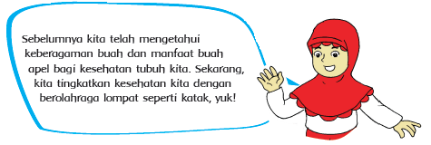
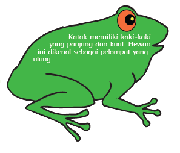
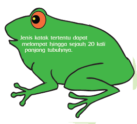

Olahraga Lompat Katak
Ketika pulang sekolah bersama teman-temannya, Edo melewati sebuah kolam kecil yang ditinggali beberapa ekor katak. Mereka berhenti di kolam itu dan melihat katak-katak berlompatan. Edo memberi tahu teman-temannya bahwa katak adalah hewan pelompat yang ulung.

Olahraga lompat katak bermanfaat untuk menambah kebugaran tubuhmu. Kegiatan ini bermanfaat untuk meningkatkan kemampuanmu menyeimbangkan tubuh ketika bergerak. Selain itu, olahraga lompat katak bermanfaat untuk menguatkan otot kaki dan tangan.
Olahraga lompat katak juga dapat dimainkan secara berkelompok. Dalam berkelompok iperlukan kerja sama yang baik. Ayo kita praktikkan !
!